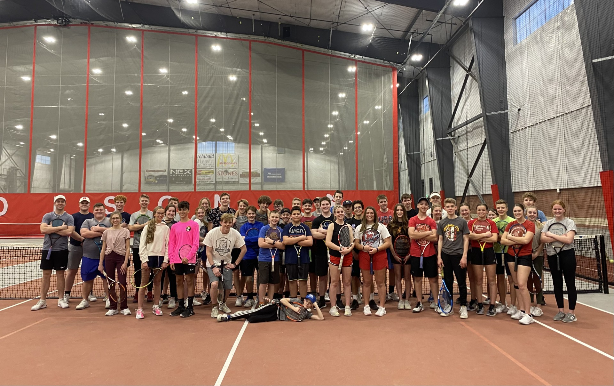
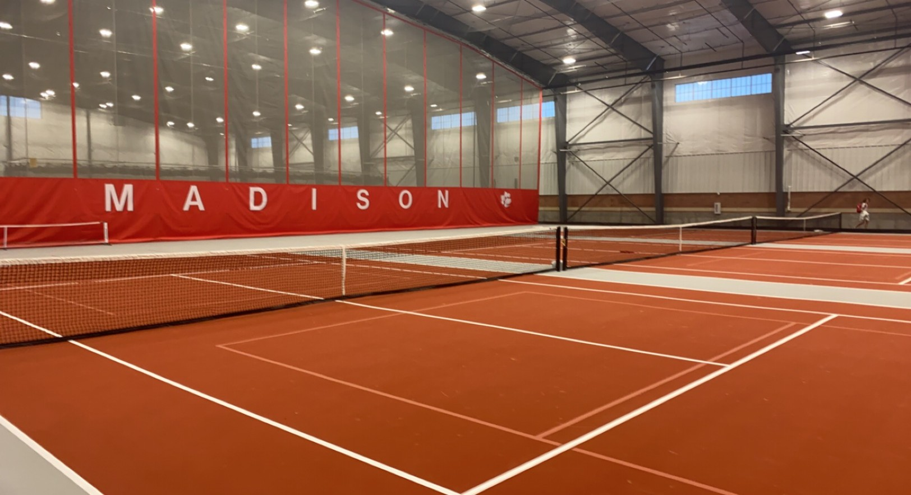

Coach DWag – Rexburg, Idaho
Private and group tennis lessons for players of all ages and levels. Build confidence, improve your technique, and enjoy the game more.
Book Lesson
About Coach Dallin “DWag” Wagner
Coach Dallin “DWag” Wagner has built a strong reputation through his passion for tennis, his understanding of tennis mechanics, and his success in helping players at all levels reach their goals. He provides training sessions for players of all ages that help them develop their skills while building a love for the game, self-discipline, and confidence.
His teaching style combines traditional coaching methods with modern tools, including video analysis and basic performance tracking. Students describe his lessons as both fun and challenging while always pushing them to improve.
Training Philosophy
The Rexburg Tennis Coaching program is built around the idea that every player is unique. All players are welcome, from complete beginners to experienced competitors, and each student brings their own goals. The Coach DWag approach identifies individual strengths and weaknesses and uses targeted drills to help players reach their potential.
Lessons emphasize consistency, good sportsmanship, a positive mindset, and learning to compete under pressure. Whether you are preparing for school tryouts, tournaments, or just want to rally with friends, we’ll create a plan that fits you.
Where We Play
Lessons are held on local courts in the Rexburg, Idaho area. Players should bring a racket, tennis shoes, and water. If you are unsure what equipment to start with, feel free to ask for recommendations.
